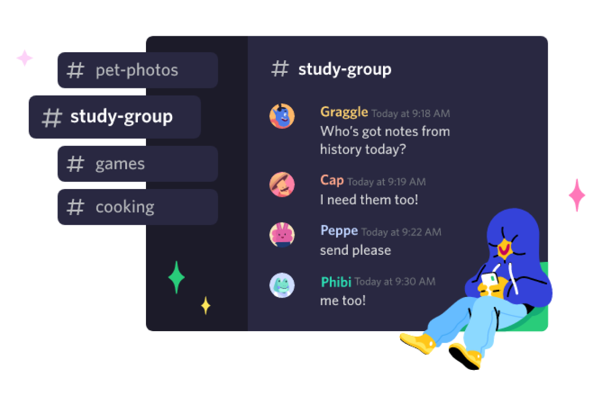
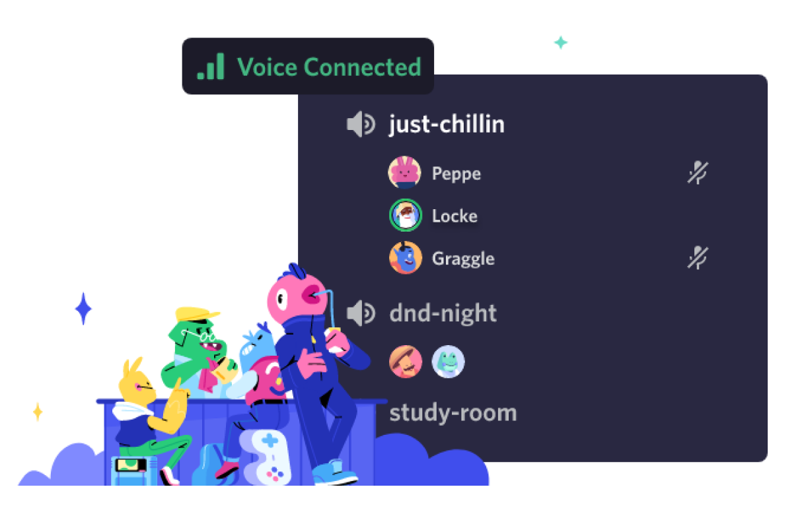
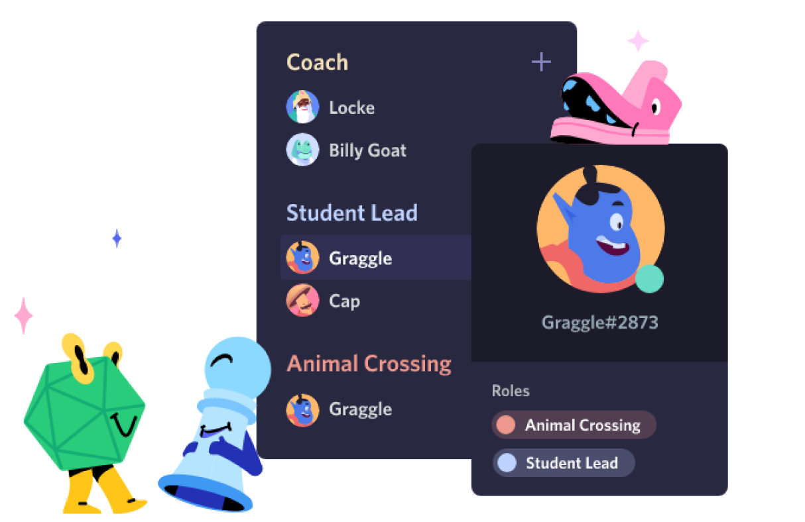
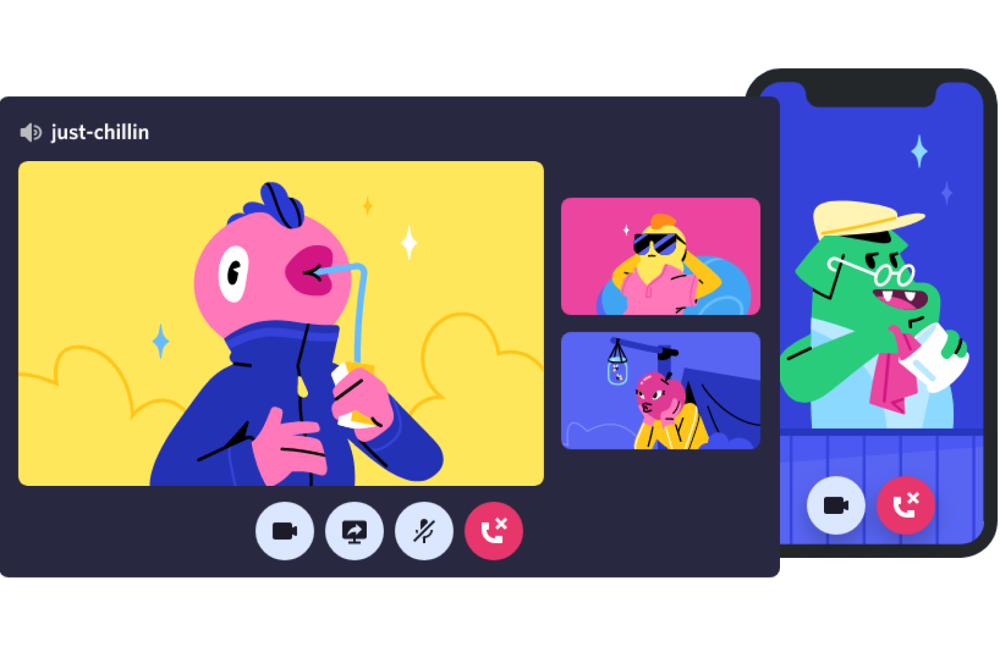

Crie um espaço controlado por convite onde você se sinta em casa
Os servidores Discord são organizados em canais com assuntos para você colaborar, compartilhar ou só conversar sobre o seu dia sem entupir um chat geral.
Aqui é fácil se encontrar
Entre no canal de voz quando estiver à toa. Amigos no seu servidor podem ver que você está por perto e entrar para conversar sem nem ter que ligar.


Para poucos e para muitos
Organize qualquer comunidade com ferramentas de moderação e acesso personalizado a membros. Dê aos membros poderes especiais, monte canais privados e muito mais.
TECNOLOGIA DE CONEXÃO CONFIÁVEL
Voz e vídeo de baixa latência, para você conversar como se estivesse na mesma sala. Dê um joinha por vídeo, veja amigos transmitirem a jogatina do dia ou junte uma galera pra desenhar na tela compartilhada.
